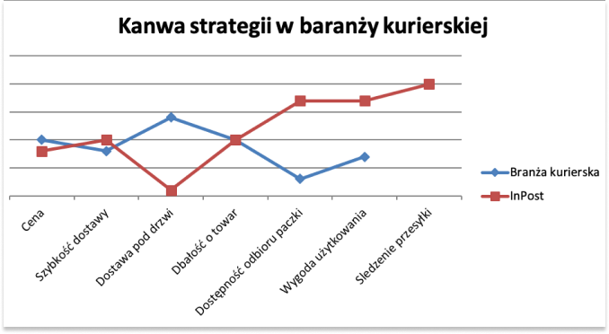

14-01-2021
Dziś na warsztat bierzemy światowy bestseller W. Chan Kima i Renee Mauborgne. Obaj panowie od lat zajmują się badaniami nad efektywnością strategii biznesowych. W tej kwesi pomogli już setkom małych jak i dużych firm. Chyba warto sprawdzić co ciekawego mają do powiedzenia. Analiza strategii w firmie może przydać się w kwesti prowadzenia własnego biznesu. Moim zdaniem może pomóc również w diagnozie czy interesująca nas spółka giełdowa jest dobrym kandydatem do posiadania jej w swoim portfelu.
Jak sprawić aby konkurencja przestała być istotna?
Na pierwszy rzut oka mogłoby się wydawać, że strategia ta polega na stworzeniu innowacji samej w sobie. Na przykład innowacji technologicznej. Niekoniecznie jednak musi to iść ze sobą w parze. Autor udowadnia wręcz, że jest wprost przeciwnie. Firmy często skupiają się na tym, żeby wprowadzić produkt czy usługę, która pod względem innowacji technologicznej zmiecie konkurencje. Dodaje kolejne funkcjonalności do swoich produktów, czego (zdaniem autora) konsekwencją często jest niepotrzebne komplikowanie użytkowania. Rodzi się więc pytanie. Czy większa funkcjonalność kosztem łatwości użytkowania jest czymś co oczekują klienci? W. Chan Kim na podstawie swoich wieloletnich badań i obserwacji udowadnia, że jest inaczej.
Błękitny ocean nie jest więc środowiskiem innowacyjnym, gdyż jest to za mało. Tym sposobem firmy dalej wydają setki milionów na marketing walcząc ze sobą o względy klientów. Strategia błękitnego oceanu ma za zadanie przyciągnąć nowy popyt na nasze dobra czy usługi. Autor określa nowy popyt mianem „nieklientów” i na nich właśnie poleca się skupiać. Osoby, które nigdy nie zwróciłyby uwagi na ofertę naszej firmy oraz naszej konkurencji. To właśnie wyróżnia błękitny ocean od czerwonych oceanów.
Sprawa jest chyba jasna. Paczkomaty wprowadziły nową wartość w branży. Odbierasz przesyłkę, kiedy chcesz, a paczkomatów jest na tyle dużo, że z łatwością zgarniesz produkt po drodze do domu. Obniżono tym samym nieco cenę wysyłki i skrócono czas dostawy. Dodatkowo dodano funkcję śledzenia przesyłki co jeszcze bardziej zwiększyło komfort użytkowania. Dzięki odbiorze przesyłek w dowolnym czasie w ciągu dnia InPost przyciągną również nowy popyt ze strony klientów, którzy rzadko zamawiali produkty zdalnie ze względu na czas lub/i formę pracy.
Teraz może wydawać się to oczywiste, jednak rodzi się kolejne pytanie. Mianowicie, jak InPost wpadł na taki pomysł? Zakładając, że nie inspirował się trendami z zachodu. Na to odpowie kolejny podpunkt proponowany przez autora.
3. Jak stworzyć kanwę?
a) Należy sprawdzić jak obecnie funkcjonuje rynek poprzez istniejące już strategie w branży.
b) Zobacz co można zmienić w branży. Aby to przeprowadzić pomocny może okazać się schemat czterech działań zaproponowany przez autorów książki.
3. Jak stworzyć kanwę?
a) Należy sprawdzić jak obecnie funkcjonuje rynek poprzez istniejące już strategie w branży.
b) Zobacz co można zmienić w branży. Aby to przeprowadzić pomocny może okazać się schemat czterech działań zaproponowany przez autorów książki.
Ok. To mogłoby wydawać się dla części czytelników oczywiste. Autor jednak na tym nie poprzestaje. W kolejnych rozdziałach przedstawione są sposoby na to jak taką strategie zaplanować oraz co najtrudniejsze jak wcielić ją w życie.
W ramach wpisu przedstawię streszczenie najważniejszych założeń autora oraz przedstawię jedną z historii przedstawionych w książce, która sprawdzi sensowność zawartych w książce hipotez.
1. Na czym polega innowacja wartości
Jak już wcześniej wspominałem innowacja jako taka nie jest czymś pożądanym, jednakże dodając do tego słowa wartość sprawia, że stwierdzenie to staje się bardzo istotne w stworzeniu nowej strategii biznesowej. Jeżeli technologia nie jest w stanie ułatwić życia nabywcom, ani nie sprawia że jest wygodniejsze czy mniej ryzykowne, nie przyciągnie do siebie mas. Zdaniem autora ludzi bardziej przyciąga wygoda, oszczędność czasu, pieniędzy, czyli wszystko co niesie za sobą zwiększenie użyteczności.
2. Jak zaplanować wdrożenie nowej strategii w firmie
Autor proponuje skorzystanie z opracowanej przez niego kanwy strategii. Jak ją stworzyć? Najpierw należy skupić się na obecnej sytuacji panującej na rynku. Wypisać na wykresie wszystkie najważniejsze cechy produktu czy usługi w obrębie całej branży. Czyli uwzględnić cechy całej konkurencji. Następnie należy sklasyfikować cechy, czy są one na wysokim czy niskim poziomie
1. Na czym polega innowacja wartości
Jak już wcześniej wspominałem innowacja jako taka nie jest czymś pożądanym, jednakże dodając do tego słowa wartość sprawia, że stwierdzenie to staje się bardzo istotne w stworzeniu nowej strategii biznesowej. Jeżeli technologia nie jest w stanie ułatwić życia nabywcom, ani nie sprawia że jest wygodniejsze czy mniej ryzykowne, nie przyciągnie do siebie mas. Zdaniem autora ludzi bardziej przyciąga wygoda, oszczędność czasu, pieniędzy, czyli wszystko co niesie za sobą zwiększenie użyteczności.
2. Jak zaplanować wdrożenie nowej strategii w firmie
Autor proponuje skorzystanie z opracowanej przez niego kanwy strategii. Jak ją stworzyć? Najpierw należy skupić się na obecnej sytuacji panującej na rynku. Wypisać na wykresie wszystkie najważniejsze cechy produktu czy usługi w obrębie całej branży. Czyli uwzględnić cechy całej konkurencji. Następnie należy sklasyfikować cechy, czy są one na wysokim czy niskim poziomie
Na te pytania warto odpowiedzieć planując strategie błękitnego oceanu. Patrząc wstecz wydaje się to proste jednak tworząc nową strategie to nie lada zadanie. Odpowiedzi raczej nie będą oczywiste, więc będą wymagały kreatywności i oderwania się od utartych przekonań i schematów. Autor zaleca również przeprowadzanie badan konsumenckich, które sprawdzą czego tak naprawdę oczekuje klient i co jest dla niego najbardziej istotne. Niestety jak zauważa również niekoniecznie takie badanie przyniesie nam odpowiedź, gdyż często ludzie nie znają odpowiedzi na to pytanie i innowacje wartości będziemy musieli zaplanować sami.
c) Punkt skupienia
Analizując kanwę strategii InPost można zauważyć, że są pewne cechy na których firma szczególnie zwraca swoją uwagę. Jest to wygoda i dostępność towaru. Te cechy znacznie odbiegają od konkurencji i dzięki temu strategia błękitnego oceanu mogła dać firmie duże korzyści. Firmy, które świadomie korzystają z tej strategii dbają właśnie o cechy, które są wyjątkowe i wyróżniają się od konkurencji.
d) Rozbieżność
Jeśli chcesz stworzyć własny błękitny ocean to kanwa twojej firmy musi znacznie odbiegać od standardowej kanwy stosowanej przez konkurencje. Tylko tak możesz wydostać się z wyścigu o pozyskanie klientów konkurenc
e) Atrakcyjna puenta
W przypadku firmy InPost puenta mogłaby wyglądać tak: „Zamów paczkę i odbierz ją kiedy tylko chcesz.” Pomyśl jak ty chcesz w prosty sposób przedstawić swoją innowację wartości dla klientów.
c) Punkt skupienia
Analizując kanwę strategii InPost można zauważyć, że są pewne cechy na których firma szczególnie zwraca swoją uwagę. Jest to wygoda i dostępność towaru. Te cechy znacznie odbiegają od konkurencji i dzięki temu strategia błękitnego oceanu mogła dać firmie duże korzyści. Firmy, które świadomie korzystają z tej strategii dbają właśnie o cechy, które są wyjątkowe i wyróżniają się od konkurencji.
d) Rozbieżność
Jeśli chcesz stworzyć własny błękitny ocean to kanwa twojej firmy musi znacznie odbiegać od standardowej kanwy stosowanej przez konkurencje. Tylko tak możesz wydostać się z wyścigu o pozyskanie klientów konkurenc
e) Atrakcyjna puenta
W przypadku firmy InPost puenta mogłaby wyglądać tak: „Zamów paczkę i odbierz ją kiedy tylko chcesz.” Pomyśl jak ty chcesz w prosty sposób przedstawić swoją innowację wartości dla klientów.
Żeby przedstawić przykładową kanwę strategii posłużę się przykładem, który przygotowałem sam. Przyjrzyjmy się zatem sytuacji panującej w branży wysyłek produktów online. Jeszcze kilka lat temu na rym rynku sytuacja wyglądała dość prosto. Zamawiany produkt klient mógł odebrać za pośrednictwem kuriera, na poczcie, osobiście lub ewentualnie w oddziale. Trzy ostatnie nie były jednak komfortowe dla konsumenta, gdyż wiązały się z poświęceniem dodatkowego czasu na dojazd i/lub czekanie w kolejce. Były niejako ostatecznością, gdy klienta nie było w domu w momencie wizyty kuriera. Branża kurierska konkurowała zatem na płaszczyźnie ceny, szybkości wysyłki, reklamy, pozyskiwania partnerów biznesowych oraz dbałości o dostarczany towar. Ewidentnie na rynku od pewnego czasu brakowało innowacji wartości dla klientów. Na rynku jednak pojawił się duży gracz, który otworzył dla siebie błękitny ocean. Jest to firma InPost. Chyba każdy domyśla się już do czego zmierzam. Wielu z was może okazać się to oczywiste i wręcz może dziwić czemu takie rozwiązanie nie zostało wprowadzone wcześniej. PACZKOMATY. Genialny sposób na wydostanie się z czerwonego oceanu. Co się zmieniło? Sprawdźmy korzystając z kanwy strategii jak wcześniej wyglądała ta branża i jakie zmiany zaszły dzięki wprowadzeniu paczkomatów przez InPost.

W książce znajdziesz o wiele więcej wskazówek i propozycji jak zaplanować i przeprowadzić kanwę strategii błękitnego oceanu. Autor odpowiada również na pytanie co zrobić, kiedy błękitny ocean zaczyna robić się czerwony oraz daje przykłady jak temu zapobiec. Ja natomiast przygotowałem plik pdf, w którym wyciągnąłem wszystkie najistotniejsze rozwiązania zaproponowane przez autora. Z premedytacją nie umieszczam tego bezpośrednio na stronie, gdyż wolałbym żebyś jednak sam sięgnął do tej lektury, a plik pdf potraktował jako usystematyzowanie wiedzy oraz fundament do budowy własnej kanwy błękitnego oceanu.
Ps. Książka nie zagwarantuje Ci genialnych pomysłów na biznes. Bądź ciekawy i sięgnij dalej. Zapytaj opinii innych, pomyśl chwile w odosobnieniu. Sam wiesz co na Ciebie najlepiej działa. Jeśli się nie poddasz w poszukiwaniu i swojej ciekawości pewnie uda Ci się coś odkryć czy zrozumieć. To jednak nie wszystko. Przed Tobą długa droga w celu realizacji zamierzonych celów i strategii. Nie poddawaj się i tyle!
Ps. Książka nie zagwarantuje Ci genialnych pomysłów na biznes. Bądź ciekawy i sięgnij dalej. Zapytaj opinii innych, pomyśl chwile w odosobnieniu. Sam wiesz co na Ciebie najlepiej działa. Jeśli się nie poddasz w poszukiwaniu i swojej ciekawości pewnie uda Ci się coś odkryć czy zrozumieć. To jednak nie wszystko. Przed Tobą długa droga w celu realizacji zamierzonych celów i strategii. Nie poddawaj się i tyle!
Maciej Młyński
20.10.2020
Nowy wpis pt. "Fundusze
Inwestycyjne Zamknięte"
Jakub Mączyński
 +48 694 577 970
+48 694 577 970
 financialmill@gmail.com
financialmill@gmail.com